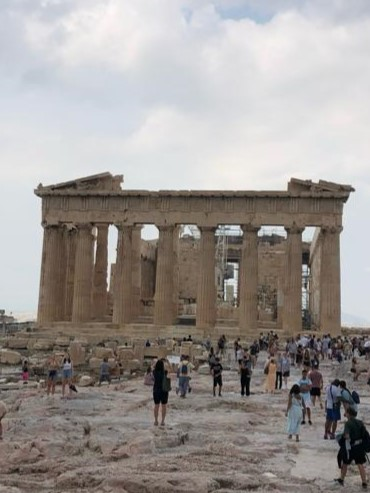

___Akropolis:
Die Akropolis in Athen ist ein faszinierendes archäologisches Wahrzeichen, das die Geschichte und Kultur des antiken Griechenlands verkörpert.
Dieser beeindruckende Felsen, auf dem die Akropolis thront, war bereits in der Bronzezeit besiedelt.
Der berühmteste Tempel auf der Akropolis ist das Parthenon, ein Meisterwerk dorischer Architektur, das der Göttin Athene gewidmet ist.
Die Akropolis und ihre Tempel wurden im 5. Jahrhundert vor Christus erbaut und sind ein herausragendes Beispiel für die griechische Baukunst und Bildhauerei.
Dieser historische Ort ist nicht nur ein UNESCO-Weltkulturerbe, sondern auch ein Symbol für die Wiege der westlichen Zivilisation und die demokratische Entwicklung.
Der Besuch der Akropolis bietet eine einzigartige Gelegenheit, in die reiche Vergangenheit Athens einzutauchen und die Pracht der antiken griechischen Kultur zu bewundern.
Akropolis-museum
Das Akropolis-Museum in Athen ist ein modernes architektonisches Juwel, das in unmittelbarer Nähe zur antiken Akropolis liegt.
Dieses Museum wurde im Jahr 2009 eröffnet und beherbergt eine beeindruckende Sammlung von Artefakten und Skulpturen aus der Akropolis.
Die Architektur des Museums ist zeitgenössisch und wurde entworfen, um die Geschichte und Bedeutung der Akropolis zu unterstreichen.
Besucher können hier sorgfältig restaurierte Statuen, Reliefs und archäologische Funde bewundern, die die Entwicklung und den Glanz des antiken Athen dokumentieren.
Das Akropolis-Museum ist eine Schatzkammer der griechischen Kultur und ein Ort, an dem die Geschichte und Kunst der Akropolis auf beeindruckende Weise präsentiert werden.
Es bietet den Besuchern die Möglichkeit, die Pracht der antiken Welt zu erleben und ein tiefes Verständnis für die Bedeutung der Akropolis zu gewinnen.
___Das Cultural Center:
Das Kulturzentrum in Athen ist ein lebendiges Zentrum für Kunst, Kultur und Kreativität.
Es beherbergt eine breite Palette von kulturellen Veranstaltungen, darunter Konzerte, Ausstellungen, Theateraufführungen und Bildungsprogramme.
Das Zentrum widmet sich der Förderung und Bewahrung der griechischen Kultur und integriert gleichzeitig internationale künstlerische Einflüsse.
Seine zeitgenössische Architektur und modernen Einrichtungen bieten einen dynamischen Raum für Künstler und Publikum, um sich zu verbinden.
Das Kulturzentrum in Athen ist ein Zeugnis für das Engagement der Stadt, künstlerischen Ausdruck und kulturellen Austausch zu fördern, und es ist ein unverzichtbares Ziel für all jene, die die vielfältige kulturelle Landschaft der griechischen Hauptstadt erkunden möchten.
mehr
___Das Cultural Center bei nacht:
Das Kulturzentrum in Athen erstrahlt nachts in einem bezaubernden Licht, das die moderne Architektur hervorhebt.
Direkt neben dem Zentrum bietet eine malerische Wasserfläche eine eindrucksvolle Wassershow.
Mit synchronisierter Musik und farbenfrohen Lichtern ist diese Vorführung ein unvergessliches Erlebnis und ergänzt die nächtliche Schönheit des Kulturzentrums perfekt.
 ___
Das Cultural Center:
___
Das Cultural Center: